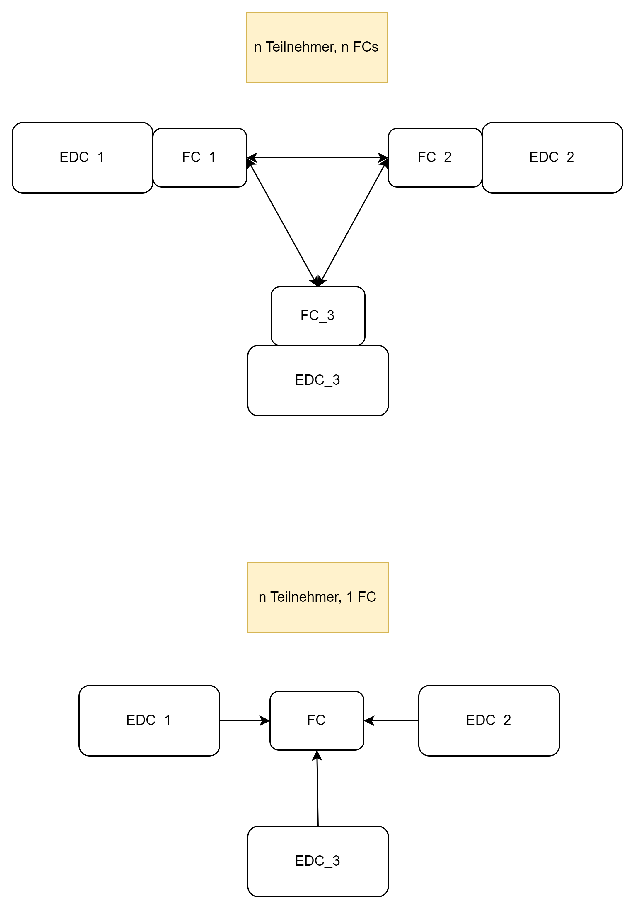

Federated Catalog
Der Federated Catalog (FC) entspricht einer Liste sämtlicher Teilnehmer eines Datenraumes mitsamt ihrer angebotenen Services und Assets. Die FC-Implementierung des AW4.0-EDC
sieht vor, dass jeder Teilnehmer im Datenraum einen eigenen FC enthält, dieser also dezentral organisiert ist. In einem Datenraum mit n Teilnehmern gibt es also
n FCs. Das Gegenstück zu diesem Konzept wäre ein zentral-organisierter FC, n Teilnehmer greifen also auf 1 FC zu.

Der FederatedCatalogApiController der FC-Extension liefert drei weitere Endpunkte zu den bereits vorhandenen. Die Beispiele sind aus Sicht eines hypothetischen Datenraumteilnehmers "LMIS" beschrieben:
/federatedcatalog
Dieser Endpunkt gibt die zuvor beschriebene Liste sämtlicher Datenraumteilnehmer mitsamt ihrer angebotenen Services und Assets zurück. Der EDC erwartet hierbei eine explizite Query im JSON-Body.
Beispiel:
POST http://<LMIS-Adresse>/management/federatedcatalog/
mit Body
{
"@context": {
"edc": "https://w3id.org/edc/v0.0.1/ns/"
},
"querySpec": {
"offset": 0,
"limit": 50,
"sortOrder": "DESC",
"sortField": "fieldName",
"filterExpression": []
}
}
Unmittelbar nach dem Start des EDC ist der FC leer, der Post-Request liefert also eine leere Liste zurück.
/insert
Mithilfe dieses Endpunkts könnten erste beziehungsweise weitere Datenraumteilnehmer in dem jeweils eigenen FC registriert werden.
Beispiel:
Ein neuer Datenraumteilnehmer "HSOS" ist im Besitz des EDC_2, der Datenraumteilnehmer "LMIS" mit EDC_1 möchte diesen abfragen.
POST http://<LMIS-Adresse>/management/federatedcatalog/insert
mit Body
{
"name": "HSOS",
"url": "http://<HSOS-Adresse>:8282/protocol",
"supportedProtocols": [
"dataspace-protocol-http"
]
}
"LMIS" kann nun seinen eigenen /federatedcatalog-Endpunkt mit der im vorherigen Beispiel gezeigten Query ansprechen und erhält den folgenden Eintrag:
[
{
"@id": "e3f5436b-ee50-4ea9-ad7d-2cc46f164105",
"@type": "dcat:Catalog",
"dcat:dataset": [],
"dcat:service": {
"@id": "135543b0-2aa1-49e8-9079-bd307020fea0",
"@type": "dcat:DataService",
"dct:terms": "connector",
"dct:endpointUrl": "http://<HSOS-Adresse>:8282/protocol"
},
"edc:originator": "http://<HSOS-Adresse>:8282/protocol",
"edc:participantId": "provider",
"@context": {
"dct": "https://purl.org/dc/terms/",
"edc": "https://w3id.org/edc/v0.0.1/ns/",
"dcat": "https://www.w3.org/ns/dcat/",
"odrl": "http://www.w3.org/ns/odrl/2/",
"dspace": "https://w3id.org/dspace/v0.8/"
}
}
]
Falls "HSOS" zusätzlich ein Asset mit ID "Messergebnis" bei sich registriert, erweitert sich der Eintrag zu:
[
{
"@id": "3d2e3930-7454-4974-82ea-8f8f2e0dc665",
"@type": "dcat:Catalog",
"dcat:dataset": {
"@id": "Messergebnis",
"@type": "dcat:Dataset",
"odrl:hasPolicy": {
"@id": "MQ==:TWVzc2VyZ2Vibmlz:MjBhZGM5MGMtNTdjYi00MzlmLWE3ZWMtZjlmMWQ4NzhkMTQ3",
"@type": "odrl:Set",
"odrl:permission": [],
"odrl:prohibition": [],
"odrl:obligation": [],
"odrl:target": "Messergebnis"
},
"dcat:distribution": [
{
"@type": "dcat:Distribution",
"dct:format": {
"@id": "HttpProxy"
},
"dcat:accessService": "135543b0-2aa1-49e8-9079-bd307020fea0"
},
{
"@type": "dcat:Distribution",
"dct:format": {
"@id": "HttpData"
},
"dcat:accessService": "135543b0-2aa1-49e8-9079-bd307020fea0"
}
],
"edc:name": "product description",
"edc:id": "Messergebnis",
"edc:contenttype": "application/json"
},
"dcat:service": {
"@id": "135543b0-2aa1-49e8-9079-bd307020fea0",
"@type": "dcat:DataService",
"dct:terms": "connector",
"dct:endpointUrl": "http://<HSOS-Adresse>:8282/protocol"
},
"edc:originator": "http://<HSOS-Adresse>:8282/protocol",
"edc:participantId": "provider",
"@context": {
"dct": "https://purl.org/dc/terms/",
"edc": "https://w3id.org/edc/v0.0.1/ns/",
"dcat": "https://www.w3.org/ns/dcat/",
"odrl": "http://www.w3.org/ns/odrl/2/",
"dspace": "https://w3id.org/dspace/v0.8/"
}
}
]
Beachte, dass mit der Registrierung eines ersten Assets durch "HSOS" auch Informationen über dessen unterstützte Dataplanes bezüglich eben jenes Assets im FC auftauchen. Hat "HSOS" keine Dataplanes bei sich registriert, wirft der "LMIS"-EDC nach Aufruf des Endpunkts eine Fehlermeldung,
/participants
Dieser Endpunkt liefert eine Liste aller Datenraumteilnehmer gemäß der Attribute Name, Connector-Url und Protokoll-Spezifikation zurück, die beim Registrieren gesetzt worden sind.
Beispiel:
GET http://<LMIS-Adresse>/management/federatedcatalog/participants
mit den Datenraumteilnehmern "HSOS" und "THGA":
[
{
"name": "HSOS",
"url": "http://<HSOS-Adresse>:8282/protocol",
"supportedProtocols": [
"dataspace-protocol-http"
]
},
{
"name": "THGA",
"url": "http://<THGA-Adresse>:8282/protocol",
"supportedProtocols": [
"dataspace-protocol-http"
]
}
]
Konfigurationsmöglichkeiten
Es gibt insgesamt drei Eigenschaften, die in der properties-Datei des EDC bezüglich des FC gesetzt werden können:
edc.catalog.cache.execution.delay.seconds
Anzahl an Sekunden, bis der EDC initial den ersten Abfrage-Vorgang startet.
Beispiel:
edc.catalog.cache.execution.delay.seconds=10
bedeutet, dass der FC das erste Mal 10 Sekunden nach Start des EDC aktualisiert wird.
edc.catalog.cache.execution.period.seconds
Häufigkeit des Abfrage-Prozesses in Sekunden.
Beispiel:
edc.catalog.cache.execution.period.seconds=5
bedeutet, dass sich der FC alle 5 Sekunden aktualisiert (nach dem initalen Abfrage-Vorgang, s. vorheriger Absatz).
edc.catalog.cache.partition.num.crawlers
Anzahl an Crawler-Objekten, die die sogenannten "Work Items" (also das Tripel aus Name, Connector-Url und supportedProtocols-Liste) verarbeiten.
Beispiel:
edc.catalog.cache.partition.num.crawlers=2
bedeutet, dass im Falle von 10 Work Items jeder Crawler 5 Work Items abfragt.